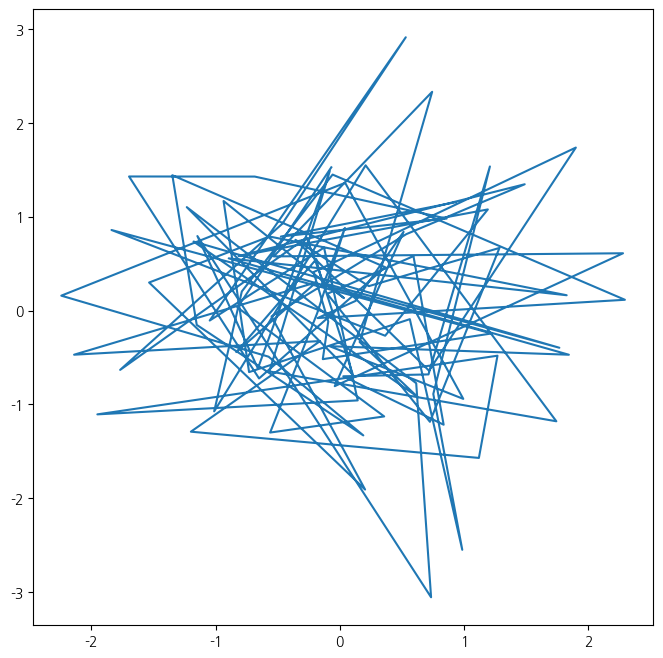
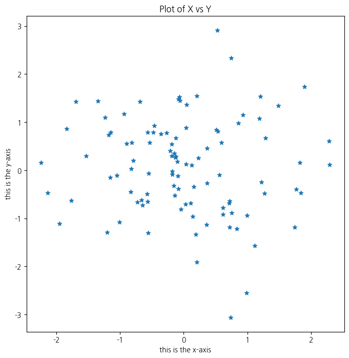
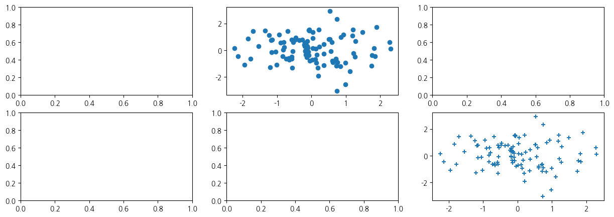

import numpy as np
x = np.random.normal(size=50)
y = x + 50 + np.random.normal(loc=0, scale=1, size=50)
np.corrcoef(x, y)array([[1. , 0.73497261],
[0.73497261, 1. ]])이상민
April 4, 2025
- x는 정규분포에서 생성, y의 평균은 x + 50, 정규분포를 따름
import numpy as np
x = np.random.normal(size=50)
y = x + 50 + np.random.normal(loc=0, scale=1, size=50)
np.corrcoef(x, y)array([[1. , 0.73497261],
[0.73497261, 1. ]])- 정규분포를 따르는 난수 생성 방법
rng = np.random.default_rng(1303)
print(rng.normal(scale=5, size=10))
rng2 = np.random.default_rng(1303)
print(rng2.normal(scale=5, size=10))
rng = np.random.default_rng(3)
y = rng.standard_normal(10)
print(y)
np.mean(y), y.mean()[ 4.09482632 -1.07485605 -10.15364596 1.13406146 -4.14030566
-4.74859823 0.48740125 5.65355173 -2.51588502 -8.07334198]
[ 4.09482632 -1.07485605 -10.15364596 1.13406146 -4.14030566
-4.74859823 0.48740125 5.65355173 -2.51588502 -8.07334198]
[ 2.04091912 -2.55566503 0.41809885 -0.56776961 -0.45264929 -0.21559716
-2.01998613 -0.23193238 -0.86521308 3.32299952](-0.1126795190952861, -0.1126795190952861)- y의 분산을 확인(표본의 크기가 커지면 1에 가까워짐)
- 그래프 구문 : fig, ax
- 기본 plot : 선으로 연결
from matplotlib.pyplot import subplots
fig, ax = subplots(figsize=(8, 8))
x = rng.standard_normal(100)
y = rng.standard_normal(100)
ax.plot(x, y);
- 그래프 구문 : 산점도 형태로, 'o'
- scatter 구문 사용
fig, ax = subplots(figsize=(8, 8))
ax.scatter(x, y, marker='*')
ax.set_xlabel("this is the x-axis")
ax.set_ylabel("this is the y-axis")
ax.set_title("Plot of X vs Y");
- 여러개 동시에 시각화
fig, axes = subplots(nrows=2, ncols=3, figsize=(15, 5))
axes[0,1].plot(x, y, 'o')
axes[1,2].scatter(x, y, marker='+')
fig
# 바깥으로 그림을 저장함
# ---------------------
fig.savefig("Figure.png", dpi=400)
- 3차원 등고선 그래프
- 행렬 생성
array([[ 0, 1, 2, 3],
[ 4, 5, 6, 7],
[ 8, 9, 10, 11],
[12, 13, 14, 15]])- 원하는 행,열만 추출하는 방법1
- 원하는 행,열만 추출하는 방법2
(array([[1],
[3]]), array([[0, 3]]))array([[ 4, 7],
[12, 15]])- 데이터 프레임
| mpg | cylinders | displacement | horsepower | weight | acceleration | year | origin | name | |
|---|---|---|---|---|---|---|---|---|---|
| 0 | 18.0 | 8 | 307.0 | 130 | 3504 | 12.0 | 70 | 1 | chevrolet chevelle malibu |
| 1 | 15.0 | 8 | 350.0 | 165 | 3693 | 11.5 | 70 | 1 | buick skylark 320 |
| 2 | 18.0 | 8 | 318.0 | 150 | 3436 | 11.0 | 70 | 1 | plymouth satellite |
| 3 | 16.0 | 8 | 304.0 | 150 | 3433 | 12.0 | 70 | 1 | amc rebel sst |
| 4 | 17.0 | 8 | 302.0 | 140 | 3449 | 10.5 | 70 | 1 | ford torino |
| ... | ... | ... | ... | ... | ... | ... | ... | ... | ... |
| 392 | 27.0 | 4 | 140.0 | 86 | 2790 | 15.6 | 82 | 1 | ford mustang gl |
| 393 | 44.0 | 4 | 97.0 | 52 | 2130 | 24.6 | 82 | 2 | vw pickup |
| 394 | 32.0 | 4 | 135.0 | 84 | 2295 | 11.6 | 82 | 1 | dodge rampage |
| 395 | 28.0 | 4 | 120.0 | 79 | 2625 | 18.6 | 82 | 1 | ford ranger |
| 396 | 31.0 | 4 | 119.0 | 82 | 2720 | 19.4 | 82 | 1 | chevy s-10 |
397 rows × 9 columns
<class 'pandas.core.frame.DataFrame'>
RangeIndex: 397 entries, 0 to 396
Data columns (total 9 columns):
# Column Non-Null Count Dtype
--- ------ -------------- -----
0 mpg 397 non-null float64
1 cylinders 397 non-null int64
2 displacement 397 non-null float64
3 horsepower 397 non-null object
4 weight 397 non-null int64
5 acceleration 397 non-null float64
6 year 397 non-null int64
7 origin 397 non-null int64
8 name 397 non-null object
dtypes: float64(3), int64(4), object(2)
memory usage: 28.0+ KB- 구별되는 값 확인 및 결측치 제거
print(np.unique(Auto['horsepower']))
Auto_new = Auto.dropna()
print(Auto.shape)
print(Auto_new.shape)['100' '102' '103' '105' '107' '108' '110' '112' '113' '115' '116' '120'
'122' '125' '129' '130' '132' '133' '135' '137' '138' '139' '140' '142'
'145' '148' '149' '150' '152' '153' '155' '158' '160' '165' '167' '170'
'175' '180' '190' '193' '198' '200' '208' '210' '215' '220' '225' '230'
'46' '48' '49' '52' '53' '54' '58' '60' '61' '62' '63' '64' '65' '66'
'67' '68' '69' '70' '71' '72' '74' '75' '76' '77' '78' '79' '80' '81'
'82' '83' '84' '85' '86' '87' '88' '89' '90' '91' '92' '93' '94' '95'
'96' '97' '98' '?']
(397, 9)
(397, 9)- 인덱스를 행라벨로 바꾸는 작업
| mpg | cylinders | displacement | horsepower | weight | acceleration | year | origin | |
|---|---|---|---|---|---|---|---|---|
| name | ||||||||
| chevrolet chevelle malibu | 18.0 | 8 | 307.0 | 130 | 3504 | 12.0 | 70 | 1 |
| buick skylark 320 | 15.0 | 8 | 350.0 | 165 | 3693 | 11.5 | 70 | 1 |
| plymouth satellite | 18.0 | 8 | 318.0 | 150 | 3436 | 11.0 | 70 | 1 |
| amc rebel sst | 16.0 | 8 | 304.0 | 150 | 3433 | 12.0 | 70 | 1 |
| ford torino | 17.0 | 8 | 302.0 | 140 | 3449 | 10.5 | 70 | 1 |
| ... | ... | ... | ... | ... | ... | ... | ... | ... |
| ford mustang gl | 27.0 | 4 | 140.0 | 86 | 2790 | 15.6 | 82 | 1 |
| vw pickup | 44.0 | 4 | 97.0 | 52 | 2130 | 24.6 | 82 | 2 |
| dodge rampage | 32.0 | 4 | 135.0 | 84 | 2295 | 11.6 | 82 | 1 |
| ford ranger | 28.0 | 4 | 120.0 | 79 | 2625 | 18.6 | 82 | 1 |
| chevy s-10 | 31.0 | 4 | 119.0 | 82 | 2720 | 19.4 | 82 | 1 |
397 rows × 8 columns
- 데이터 프레임에서 원하는 값 찾는 법
rows = ['amc rebel sst', 'ford torino']
print(Auto_re.loc[rows])
print(Auto_re.iloc[[1,2,3,4],[0,2,3]]) mpg cylinders displacement horsepower weight acceleration \
name
amc rebel sst 16.0 8 304.0 150 3433 12.0
ford torino 17.0 8 302.0 140 3449 10.5
year origin
name
amc rebel sst 70 1
ford torino 70 1
mpg displacement horsepower
name
buick skylark 320 15.0 350.0 165
plymouth satellite 18.0 318.0 150
amc rebel sst 16.0 304.0 150
ford torino 17.0 302.0 140- 연도가 80 넘는 것 중 weight 과 origin
weight origin
name
plymouth reliant 2490 1
buick skylark 2635 1
dodge aries wagon (sw) 2620 1
chevrolet citation 2725 1
plymouth reliant 2385 1
toyota starlet 1755 3
plymouth champ 1875 1
honda civic 1300 1760 3
subaru 2065 3
datsun 210 mpg 1975 3
toyota tercel 2050 3
mazda glc 4 1985 3
plymouth horizon 4 2215 1
ford escort 4w 2045 1
ford escort 2h 2380 1
volkswagen jetta 2190 2
renault 18i 2320 2
honda prelude 2210 3
toyota corolla 2350 3
datsun 200sx 2615 3
mazda 626 2635 3
peugeot 505s turbo diesel 3230 2
volvo diesel 3160 2
toyota cressida 2900 3
datsun 810 maxima 2930 3
buick century 3415 1
oldsmobile cutlass ls 3725 1
ford granada gl 3060 1
chrysler lebaron salon 3465 1
chevrolet cavalier 2605 1
chevrolet cavalier wagon 2640 1
chevrolet cavalier 2-door 2395 1
pontiac j2000 se hatchback 2575 1
dodge aries se 2525 1
pontiac phoenix 2735 1
ford fairmont futura 2865 1
volkswagen rabbit l 1980 2
mazda glc custom l 2025 3
mazda glc custom 1970 3
plymouth horizon miser 2125 1
mercury lynx l 2125 1
nissan stanza xe 2160 3
honda accord 2205 3
toyota corolla 2245 3
honda civic 1965 3
honda civic (auto) 1965 3
datsun 310 gx 1995 3
buick century limited 2945 1
oldsmobile cutlass ciera (diesel) 3015 1
chrysler lebaron medallion 2585 1
ford granada l 2835 1
toyota celica gt 2665 3
dodge charger 2.2 2370 1
chevrolet camaro 2950 1
ford mustang gl 2790 1
vw pickup 2130 2
dodge rampage 2295 1
ford ranger 2625 1
chevy s-10 2720 1- 연도가 80을 넘고 mpg가 30이 넘는 것 중 weight와 origin
weight origin
name
toyota starlet 1755 3
plymouth champ 1875 1
honda civic 1300 1760 3
subaru 2065 3
datsun 210 mpg 1975 3
toyota tercel 2050 3
mazda glc 4 1985 3
plymouth horizon 4 2215 1
ford escort 4w 2045 1
volkswagen jetta 2190 2
renault 18i 2320 2
honda prelude 2210 3
toyota corolla 2350 3
datsun 200sx 2615 3
mazda 626 2635 3
volvo diesel 3160 2
chevrolet cavalier 2-door 2395 1
pontiac j2000 se hatchback 2575 1
volkswagen rabbit l 1980 2
mazda glc custom l 2025 3
mazda glc custom 1970 3
plymouth horizon miser 2125 1
mercury lynx l 2125 1
nissan stanza xe 2160 3
honda accord 2205 3
toyota corolla 2245 3
honda civic 1965 3
honda civic (auto) 1965 3
datsun 310 gx 1995 3
oldsmobile cutlass ciera (diesel) 3015 1
toyota celica gt 2665 3
dodge charger 2.2 2370 1
vw pickup 2130 2
dodge rampage 2295 1
chevy s-10 2720 1- zip 구문을 이용해서 가중평균 계산
total = 0
for value, weight in zip([2,3,19],[0.2,0.3,0.5]):
total += weight * value
print('Weighted average is: {0}'.format(total))Weighted average is: 0.4
Weighted average is: 1.2999999999999998
Weighted average is: 10.8- M에서 np.nan을 이용해 임의로 결측치 생성
rng = np.random.default_rng(1)
A = rng.standard_normal((127, 5))
M = rng.choice([0, np.nan], p=[0.8,0.2], size=A.shape)
A += M
D = pd.DataFrame(A, columns=['food','bar', 'pickle', 'snack', 'popcorn'])
print(D[:3]) food bar pickle snack popcorn
0 0.345584 0.821618 0.330437 -1.303157 NaN
1 NaN -0.536953 0.581118 0.364572 0.294132
2 NaN 0.546713 NaN -0.162910 -0.482119- nan값의 비율 확인
for col in D.columns:
template = 'Column "{0}" has {1:.2%} missing values'
print(template.format(col, np.isnan(D[col]).mean()))
#print format 0: col, 1: np.isnan(D[col]).mean()
#col-colnameColumn "food" has 16.54% missing values
Column "bar" has 25.98% missing values
Column "pickle" has 29.13% missing values
Column "snack" has 21.26% missing values
Column "popcorn" has 22.83% missing values- 상호 관계를 알기 위한 산점도